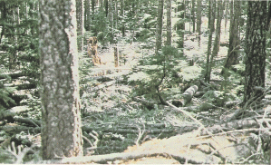
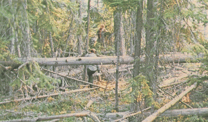
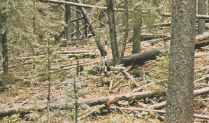

|
|
Fire Behavior Fuel Model 10 -- Timber Litter and Understory |
Anderson (1982) classifies Fire Behavior Fuel Model 10 in the Timber Fuel Type and describes it as follows:
The fires burn in the surface and ground fuels with greater fire intensity than the other timber litter models. Dead-down fuels include greater quantities of 3-inch (7.6 cm) or larger limbwood resulting from overmaturity or natural events that create a large load of dead material on the forest floor. Crowning out, spotting, and torching of individual trees are more frequent in this fuel situation, leading to potential fire control difficulties. Any forest type may be considered if heavy down material is present; examples are insect or disease ridden stands, wind-thrown stands, overmature situations with deadfall, and aged light thinning or partial-cut slash.
Anderson's (1982) photographs 28, 29, and 30 are examples of fuels fitting this model.
|  | Anderson (1982) Photo 28, Fire Behavior Fuel Model 10. Old-growth Douglas-fir with heavy ground fuels. |
|  | Anderson (1982) Photo 29, Fire Behavior Fuel Model 10. Mixed conifer stand with dead-down woody fuels. |
|  | Anderson (1982) Photo 30, Fire Behavior Fuel Model 10. Spruce habitat type where succession or natural disturbance can produce a heavy downed fuel load. |